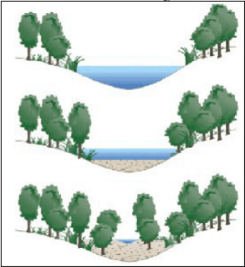

Conteúdo: Tipos de intemperismo; tipos de erosão; sedimentação
Objetivo: Entender o papel das forças externas na configuração das estruturas e formas de relevo terrestre.
Questão 01
(UEFS-BA 2017) Os fiordes, típicos no estudo do relevo continental costeiro em elevadas latitudes, são feições formadas
a) pela intensificação de agentes internos, sobretudo o tectonismo.
b) pela interferência de agentes internos, sobretudo a intrusão magmática.
c) pela ocorrência de agentes externos, especificamente a erosão pluvia.
d) pela atuação de agentes externos, especificamente a erosão glacial.
e) pela manifestação de agentes externos, especialmente a erosão antrópica.
Questão 02
(UNICSAL 2015) As figuras abaixo representam sequencialmente a formação de:
a) uma cuesta devido à erosão diferencial e grande tectonismo plástico.
b) um dobramento moderno devido à intensa ação orogênica convergente
c) um sistema de serras, devido à fragmentação das rochas mais resistentes
d) um vale através de agentes externos do relevo, com grande influência fluvial
e) uma falésia cristalina, devido à intensa abrasão marinha e a resistência das rochas.
Questão 03
(FAMERP 2015) Os agentes externos do relevo promovem o trabalho escultural da paisagem, com o desgaste ou a construção de novas feições.
Da ação das águas dos rios e do mar resultam, respectivamente,
a) os deltas e as falésias.
b) os fiordes e os estuários.
c) as restingas e as torrentes.
d) as enxurradas e as dunas.
e) os cânions e as morainas.
Questão 04
(UFPR 2016) A geomorfologia é o campo do conhecimento técnico e científico que estuda as formas do relevo e os processos pretéritos e presentes envolvidos. Em regiões sob a influência de clima tropical e subtropical, o relevo, em grande parte, está sendo moldado pela ação das chuvas, que promove o intemperismo nas rochas e o transporte e deposição dos sedimentos. Apesar de esses processos participarem da dinâmica natural, eles podem ser influenciados pela ação humana. A alteração no seu equilíbrio pode trazer graves consequências à sociedade.
Sobre os processos geomorfológicos que têm sido intensificados pela influência humana, considere as seguintes afirmativas:
1. O processo de assoreamento tem ocorrido com grande frequência nas áreas mais elevadas do relevo, onde as declividades são mais íngremes, trazendo prejuízos por afetar os chamados topos de morros.
2. Os escorregamentos e as corridas de detritos e lama, que são deflagrados por grande volume de chuvas e ocorrem, predominantemente, em regiões serranas e nas encostas com maiores inclinações, estão entre os processos geomorfológicos que trazem maiores danos à sociedade.
3. A erosão pluvial em vertentes, que traz grandes prejuízos econômicos e ambientais, está condicionada, além de às características do relevo, também aos tipos de solo, à dinâmica das chuvas, à cobertura da vegetação e ao tipo de uso antrópico.
Assinale a alternativa correta.
a) Somente a afirmativa 3 é verdadeira.
b) Somente as afirmativas 1 e 2 são verdadeiras.
c) Somente as afirmativas 1 e 3 são verdadeiras.
d) Somente as afirmativas 2 e 3 são verdadeiras.
e) As afirmativas 1, 2 e 3 são verdadeiras.
Questão 05
(UEP 2011) Os processos geomorfológicos internos ou exógenos deixam sempre impressas, nas paisagens, as marcas de sua atuação. Eles desenvolvem, inclusive, um conjunto de feições de relevo característico. Esse fato reveste-se de uma particular importância, quando o pesquisador de áreas, como Biologia, Geografia, Geologia etc., volta-se à análise de ambientes pretéritos. Com relação a esse assunto, observe, atentamente, a fotografia reproduzida a seguir e assinale, com base nas evidências morfológicas, o processo responsável pela elaboração da paisagem visualizada em primeiro plano.
a) Erosão eólica.
b) Erosão glacial.
c) Tectonismo ruptural.
d) Neotectonismo plástico.
e) Sedimentação fluvial.
Questão 06
(Unioeste) No Brasil, em regiões tropicais úmidas com relevo de encostas íngremes, ocorrem rápidos movimentos de massa, os quais desencadeiam problemas sociais e econômicos, particularmente nas áreas urbanas. Esse fenômeno é mais comum no verão, quando as chuvas são abundantes, tornando o solo mais saturado. De acordo com o exposto, considere as afirmativas abaixo.
I - A topografia, o regime pluviométrico, a estrutura e a espessura do manto de alteração, as atividades humanas e a retirada da vegetação original são alguns dos fatores que influenciam movimentos rápidos de massa.
II - Os movimentos de massa fazem parte da dinâmica externa da crosta terrestre e são agentes que participam da modelagem do relevo, independentemente da intervenção humana.
III – Em algumas grandes cidades e regiões metropolitanas brasileiras, é comum a ocupação das encostas de morros pela população de baixa renda, a mais prejudicada pelos efeitos socioambientais negativos dos movimentos rápidos de massa.
IV - os movimentos de massa são analisados considerando-se basicamente a natureza do material transportado (solo, detritos ou rocha) e a velocidade do movimento, que varia desde alguns centímetros por ano até mais de 5km por hora.
V - o deslizamento e corrida de lama são classificados como movimentos rápidos de massa, desencadeados principalmente pela declividade do terreno, a água e a gravidade.
Assim, assinale a alternativa CORRETA.
a) Estão corretas as alternativas I, III e V.
b) Estão corretas as alternativas II, III, IV e V.
c) Está correta apenas a alternativa I.
d) Estão corretas todas as alternativas
e) Estão corretas as alternativas I, II e IV.
Questão 07
(Unesp 2006) A figura representa o processo de evolução de uma forma de relevo associada à água.

Assinale a alternativa que contém o tipo de paisagem, o processo geomorfológico atuante e o resultado final.
a) Paisagem lacustre; sedimentação; desaparecimento do lago.
b) Paisagem marinha; assoreamento; falésia.
c) Paisagem fluvial; abrasão; terraço.
d) Paisagem pluvial; desmatamento; revegetação.
e) Paisagem desértica; sedimentação; dunas
Comentário:
Observa-se na evolução apresentada uma paisagem lacustre, processo geomorfológico de sedimentação e o desaparecimento do lago
Questão 08
(Fatec) Assinale a alternativa correta sobre o trabalho dos agentes externos na formação do relevo terrestre.
a) A erosão é o desgaste das rochas gerado pelo intemperismo ou pela ação dos ventos e das águas.
b) O tectonismo resulta do movimento do magma sob a crosta terrestre, produzindo falhamentos, dobramentos e abalos sísmicos.
c) O intemperismo químico produz a desintegração mecânica das rochas e é mais encontrado nas áreas desérticas quentes e frias.
d) A ação erosiva dos ventos é mais intensa nas regiões tropicais, em função do grande número de tempestades ao longo do ano.
e) O vulcanismo é um dos principais meios de construção do relevo terrestre, responsável por um grande número de ilhas no chamado "círculo de fogo".
Questão 09
Acúmulo e deposição dos materiais fragmentados de rochas em áreas de baixa altitude.
Assinale a alternativa correspondente a descrição:
a) intemperismo.
b) sedimentação.
c) deslizamento.
d) erosão hídrica.
Questão 10
Decomposição da rocha por processos mecânicos produzidos por vegetais através de raízes, escavação de roedores, etc. ou químicos através de bactérias e algas que adentram nas fraturas das rochas.
a) intemperismo químico.
b) intemperismo biológico.
c) intemperismo físico.
d) intemperismo.